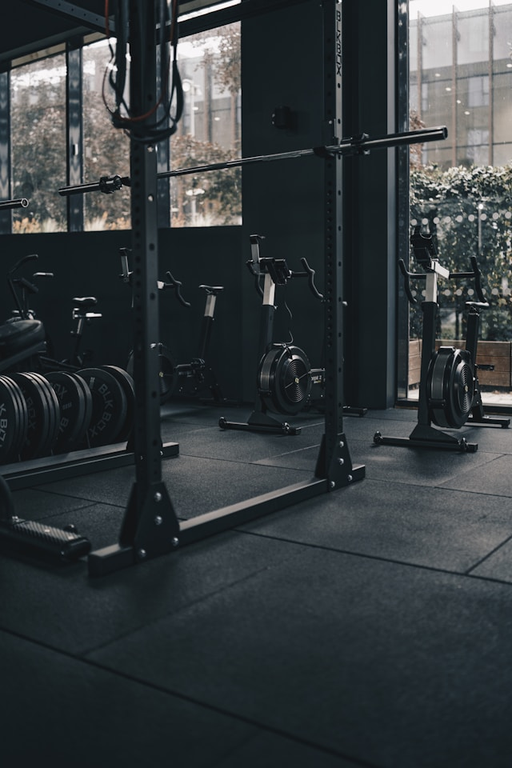

Heart rate monitors, GPS, and platforms like YouTube have made training methodology accessible to anyone with a smartphone. What used to require a coach or a sports science degree can now be self-taught — and that’s a big part of why cycling and triathlon have grown so much in popularity over the past decade.
If you have any ambitions in endurance sport, it’s worth learning the basics of how training works and building your own plan. Questions like “What is Zone 2?” or “Should I take a rest day or do active recovery?” are easily answered with a bit of research. The harder part is consistency — sticking with it through setbacks, busy weeks, and the inevitable phases where progress feels slow. Everyone starts somewhere different, and progress takes time regardless of where that starting point is.

One thing beginners often get wrong is doing too much too soon. Sport follows a counterintuitive rule: less is often more. Overtraining leads to fatigue, performance drops, and injury — especially when you’re still adapting. Collect experience, try different approaches, and learn to listen to your body. The benefits of consistent training are substantial: better performance, improved mental clarity, stress relief, and long-term health gains.
Alongside endurance work, strength and mobility training are worth including. Heavy compound movements like squats and deadlifts are not just for gym athletes — they benefit cyclists too. It takes time to build technique and body awareness, but the long-term payoff is significant. Resistance training has had a lot of attention recently, and for good reason.
Nutrition matters as much as training. After a session, replenish your carbohydrate stores quickly. Before and during longer efforts, make sure you’re adequately fuelled — the phrase “fat burns in the fire of carbohydrates” captures it well. Without sufficient carbs, your performance will fall off sharply. In general, aim for a balanced diet with enough protein and plenty of carb-rich foods: rice, pasta, bread, fruit. Nutrition science is complex and individual — a quote that stuck with me from a TED Talk sums it up well: only half of what nutritional science claims is actually true. The problem is we don’t know which half.
Beginner Training Plan
To build an aerobic base, aim for at least three Zone 2 sessions per week of around an hour each — cycling, running, or any aerobic activity you enjoy. Zone 2 means a conversational pace: you could hold a full sentence without gasping. Don’t rely too heavily on heart rate formulas, as heart rate varies a lot day to day, especially early on.
In the beginning, even 20 minutes is enough to start adapting. Once you have a base, you can layer in interval sessions to push performance further. Supplement with strength training and mobility work — stretching, foam rolling, whatever you’ll actually do consistently. Most people find it hard to follow a rigid training plan alongside demanding studies, and that’s fine. Even a small amount of regular movement makes a real difference, and there’s usually more time for structured training later.
Having alternatives to outdoor riding — running or indoor cycling — keeps you flexible when the weather or schedule doesn’t cooperate. If you’d like help putting together a training plan or want to talk through training methods, feel free to reach out. Imperial students also have access to the New York Times, which regularly publishes well-researched articles on endurance training — many directly applicable to cycling.